INTERFACE 01 · PC-FNO3DPC-FNO3D - Carte
Explorer la répartition du vent à un instant et à une altitude. Choix de la composante u/v/w, vitesse ou direction, altitude ASL et résolution ; un clic donne le point.
Résultat calculé par best.pt, mini-modèle CPU. Les carrés visibles viennent de la petite grille et de sa décimation.
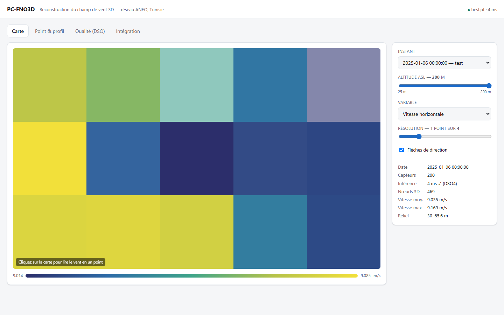
Capture intégrale · Page 5 du PDF
INTERFACE 02 · PC-FNO3DPC-FNO3D - Point et profil
Lire le vent à une position et comparer ses niveaux verticaux. Coordonnées X/Y en mètres, altitude ASL, vitesse, direction et composantes ; profil au-dessus du relief.
Le point affiché a été interrogé. ASL désigne une altitude absolue ; la hauteur au-dessus du sol dépend du relief local.
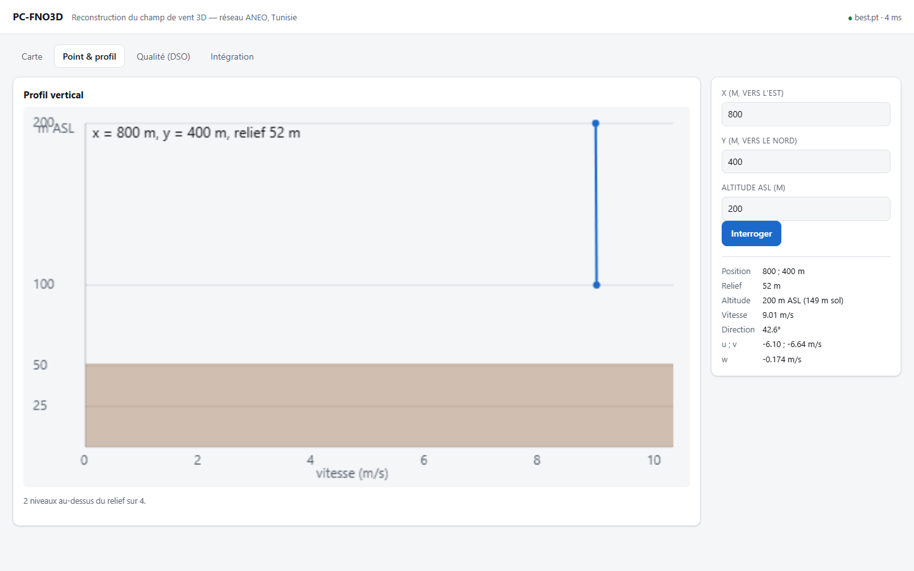
Capture intégrale · Page 6 du PDF
INTERFACE 03 · PC-FNO3DPC-FNO3D - Qualité DSO
Vérifier les objectifs DSO : précision, conservation de masse, finesse spatiale, temps de calcul et robustesse aux capteurs manquants.
Seul DSO4 passe dans ce test de deux époques. Ce résultat valide le fonctionnement du pipeline, pas la qualité du modèle de production.
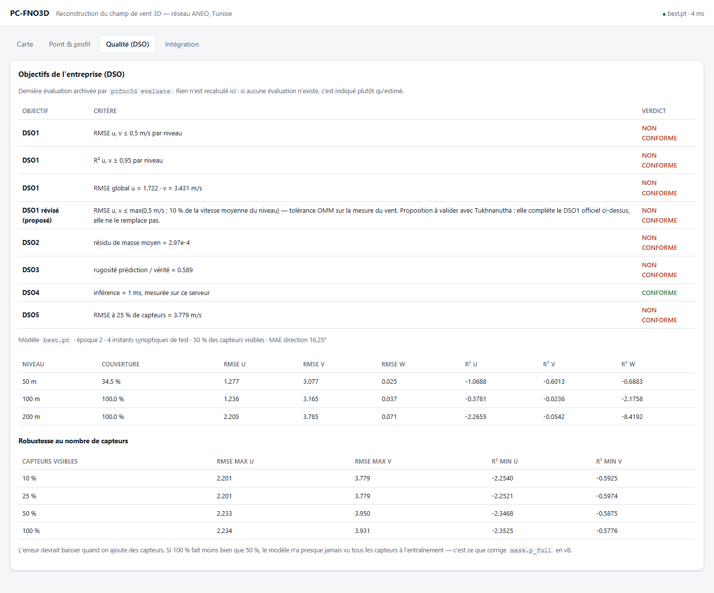
Capture intégrale · Page 7 du PDF
INTERFACE 04 · PC-FNO3DPC-FNO3D - Intégration
Brancher un logiciel ou un agent au modèle. Adresses de l’API et du MCP, exemples de requêtes et conventions de données ; documentation sur /api/docs.
Le serveur répond ici uniquement sur la boucle locale. La liste des outils MCP a été obtenue avec succès.
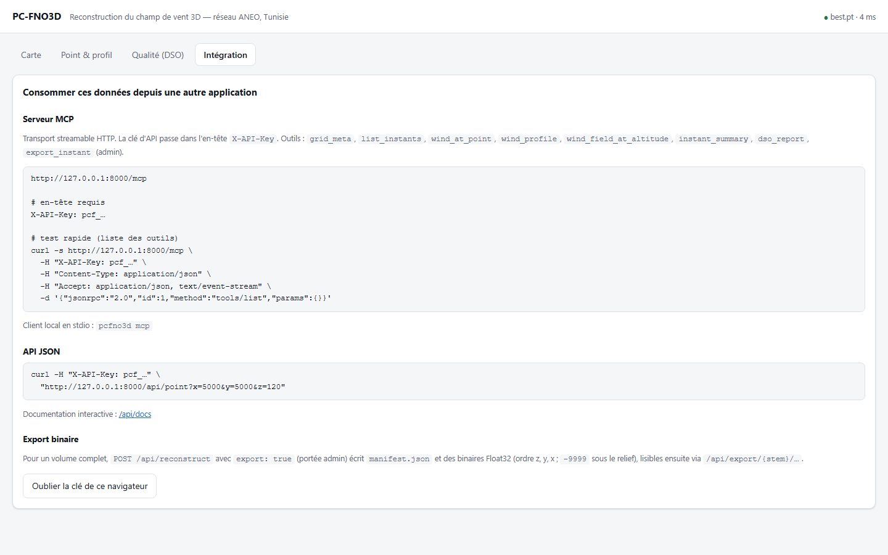
Capture intégrale · Page 9 du PDF
INTERFACE 05 · ATOM WindATOM Wind - Visite guidée
Présenter le service et guider une première utilisation : reconstruction entre les capteurs, activités, fiabilité et vues du produit.
La visite décrit l’objectif du produit. Elle ne démontre pas que le dataset ou les poids de production sont présents sur cette machine.
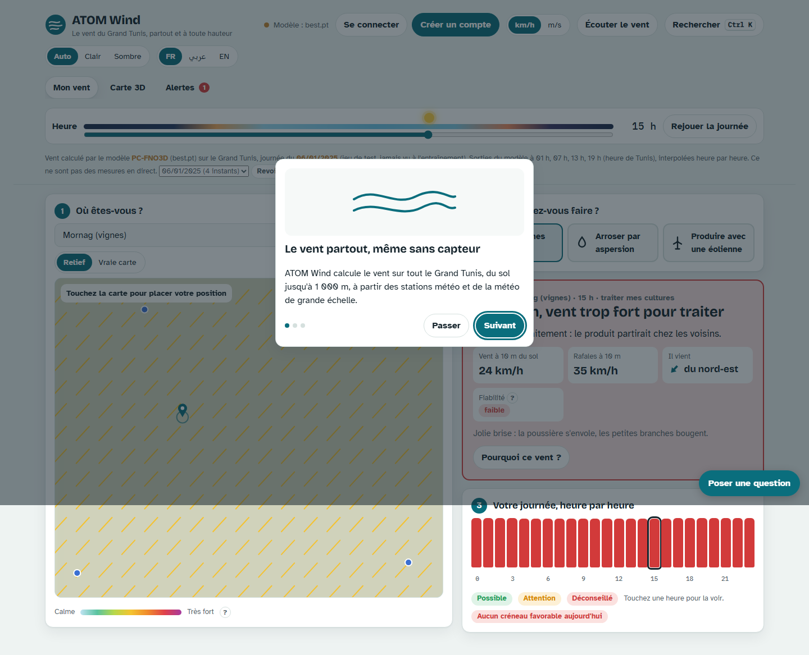
Capture intégrale · Page 10 du PDF
INTERFACE 06 · ATOM WindATOM Wind - Connexion
Accéder aux espaces selon le rôle. Formulaire de connexion et entrées de démonstration : agriculteur, exploitant éolien et administrateur.
Les captures suivantes utilisent le profil Administrateur de démonstration dans un navigateur de test isolé.
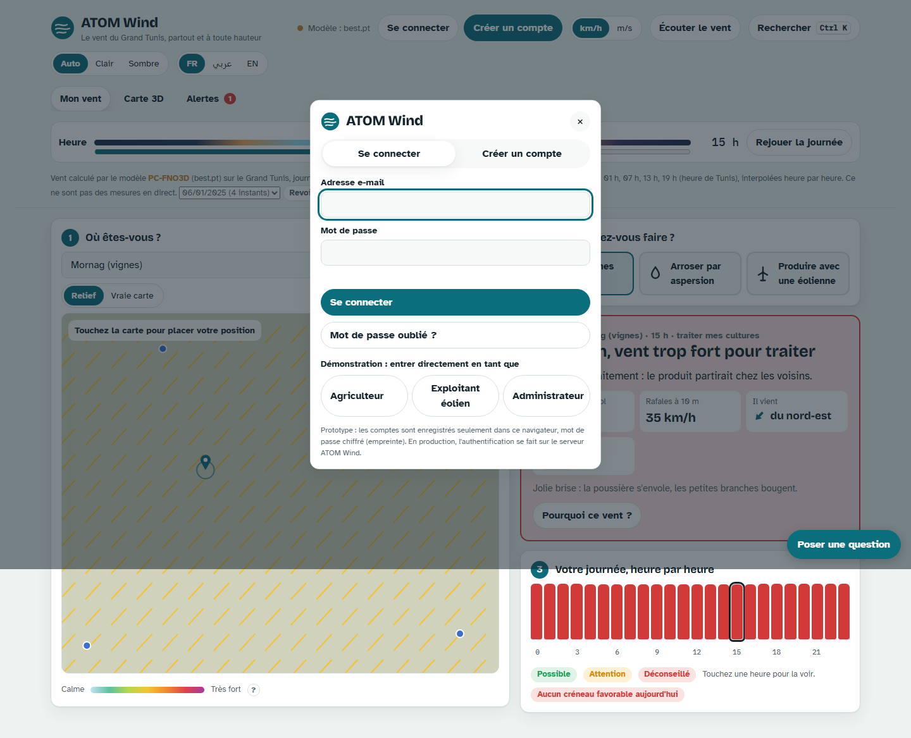
Capture intégrale · Page 11 du PDF
INTERFACE 07 · ATOM WindATOM Wind - Inscription
Présenter la demande d’accès : nom, identifiants et profil. L’espace éolien est présenté comme soumis à validation par l’équipe.
Formulaire ouvert pour la capture uniquement : aucune inscription soumise et aucun compte réel créé.
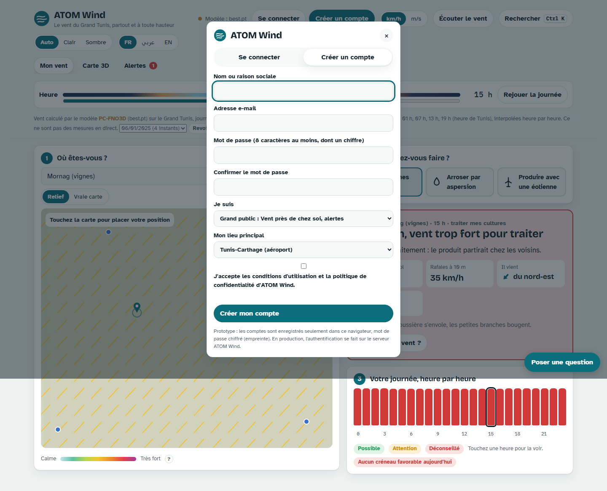
Capture intégrale · Page 12 du PDF
INTERFACE 08 · ATOM WindATOM Wind - Mon vent
Transformer le vent local en réponse pour une activité. Lieu, carte, traitement des cultures, aspersion ou éolienne ; verdict, rafales, direction et créneaux.
Le front consomme le mini-modèle local. Les villes et recommandations ne représentent pas une météo réelle validée.
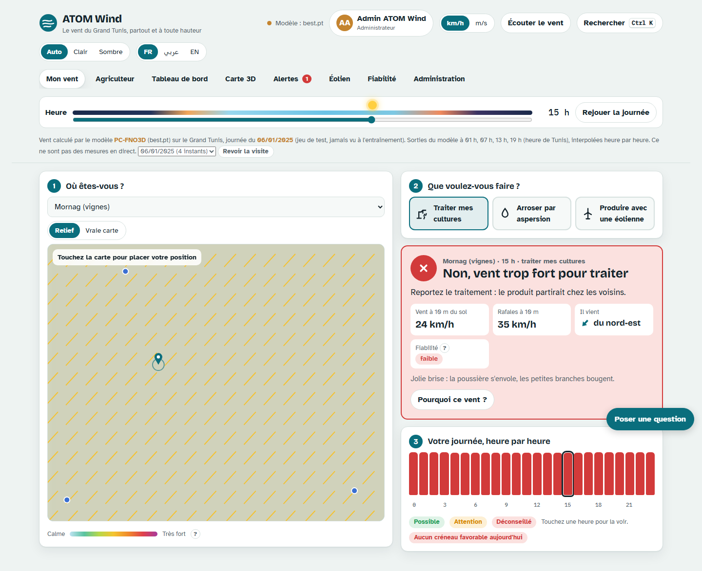
Capture intégrale · Page 13 du PDF
INTERFACE 09 · ATOM WindATOM Wind - Agriculteur
Organiser les travaux agricoles : lieu, culture, jour, fenêtres de traitement, irrigation et risque de vent chaud et sec.
Hors temps réel, demain et après-demain restent des variantes d’exemple. Les conseils ne sont pas validés agronomiquement dans cette revue.
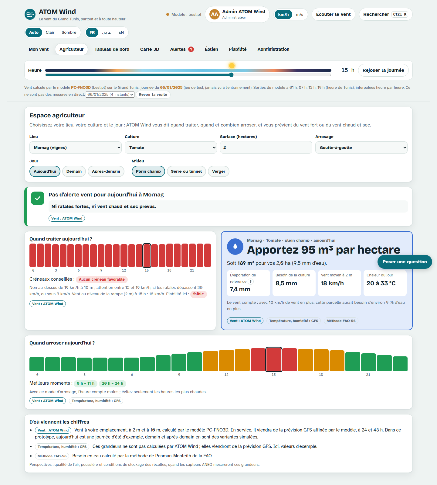
Capture intégrale · Page 14 du PDF
INTERFACE 10 · ATOM WindATOM Wind - Tableau de bord
Synthétiser l’exploitation : vent moyen, rafale, production virtuelle, alertes, couverture, durée, résidu de masse, courbe horaire et réseau.
Le panneau de qualité contient aussi des valeurs de référence intégrées au front. Elles ne décrivent pas toutes le best.pt local de deux époques.
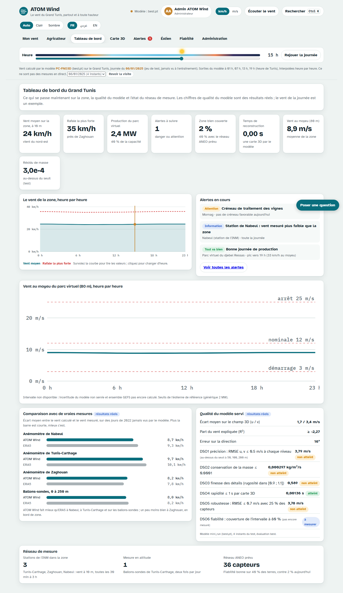
Capture intégrale · Page 16 du PDF
INTERFACE 11 · ATOM WindATOM Wind - Carte 3D
Comprendre le déplacement de l’air au-dessus du relief : navigation 3D, hauteur, couleurs, particules, lignes de courant, stations, éoliennes et coupes.
Le rendu WebGL fonctionne. Le curseur jusqu’à 1 000 m ne signifie pas que le mini-modèle (25 à 200 m ASL) est validé à ces hauteurs.
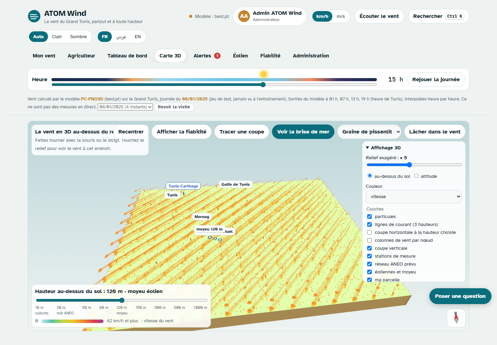
Capture intégrale · Page 19 du PDF
INTERFACE 12 · ATOM WindATOM Wind - Alertes
Localiser les situations qui demandent une action : quoi, où, quand, cause et recommandation ; carte et formulaire d’alerte par activité et canal.
L’envoi SMS/WhatsApp est présenté comme simulé. La capture ne prouve ni un envoi réel ni une détection validée en production.
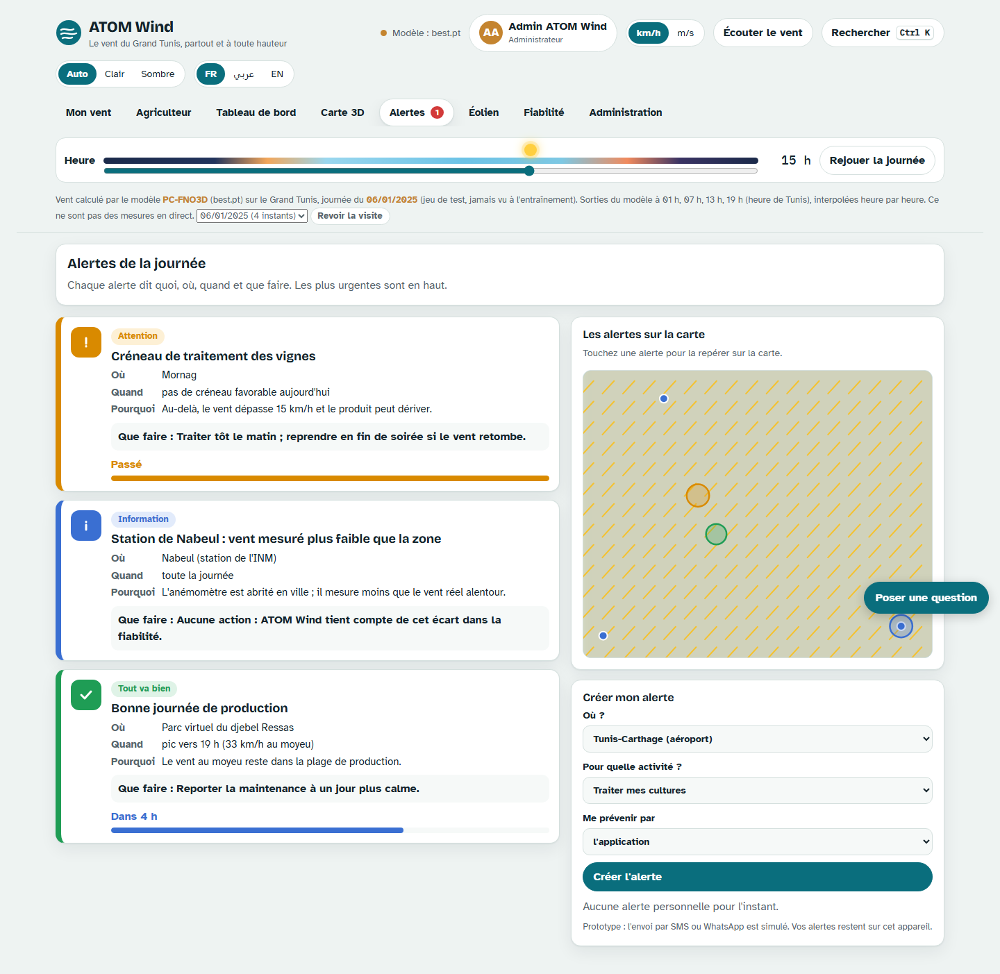
Capture intégrale · Page 20 du PDF
INTERFACE 13 · ATOM WindATOM Wind - Éolien
Relier le vent en altitude à l’énergie : production virtuelle, courbe de la journée, turbines, profil du rotor, rose des vents, placement et carte de gisement.
Le parc est virtuel. Ces estimations ne sont pas une production mesurée et ne remplacent pas une étude de site.
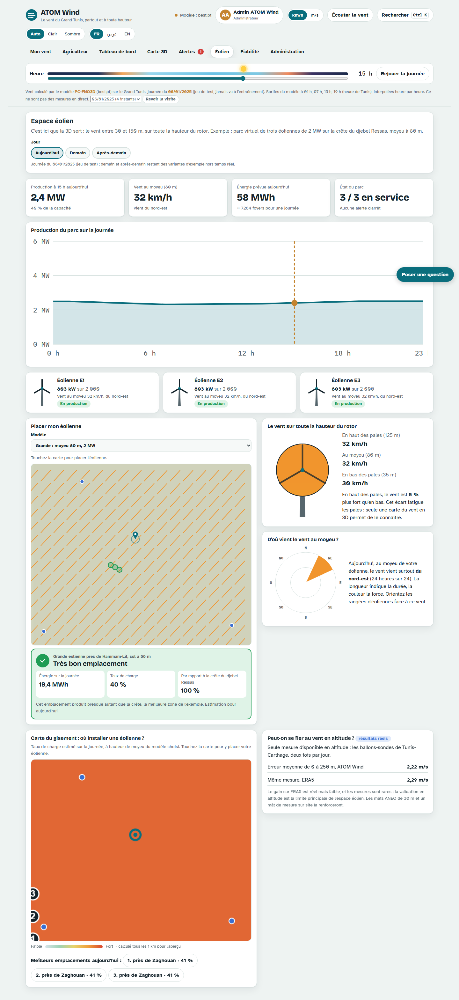
Capture intégrale · Page 21 du PDF
INTERFACE 14 · ATOM WindATOM Wind - Fiabilité
Expliquer où le vent est mieux connu. Comparaison réseau actuel / ANEO prévu, carte de couverture et tableau de mesures de référence.
Le bandeau précise une fiabilité indicative par distance au capteur, sans incertitude calibrée servie. Le plan ANEO est un exemple.
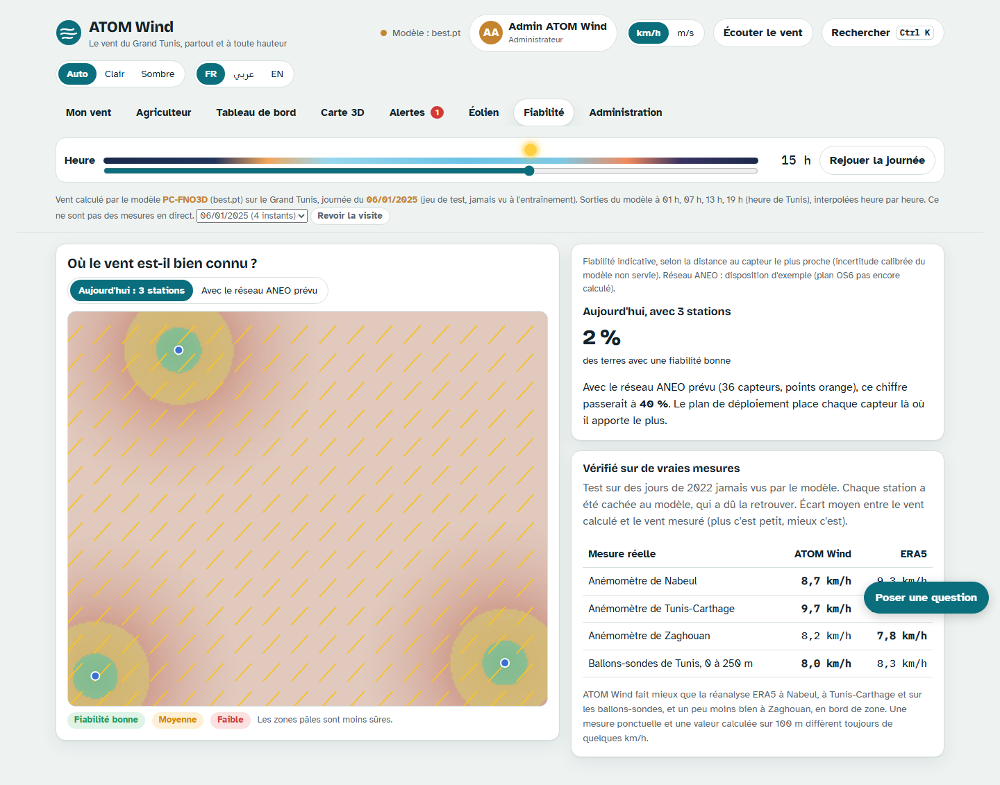
Capture intégrale · Page 24 du PDF
INTERFACE 15 · ATOM WindATOM Wind - Administration
Présenter la gestion des comptes, rôles et accès : compteurs, utilisateurs, statuts, profils, matrice des accès et clés d’API.
Profil Administrateur de démonstration. Aucune clé, validation, révocation ou modification d’accès serveur exécutée.
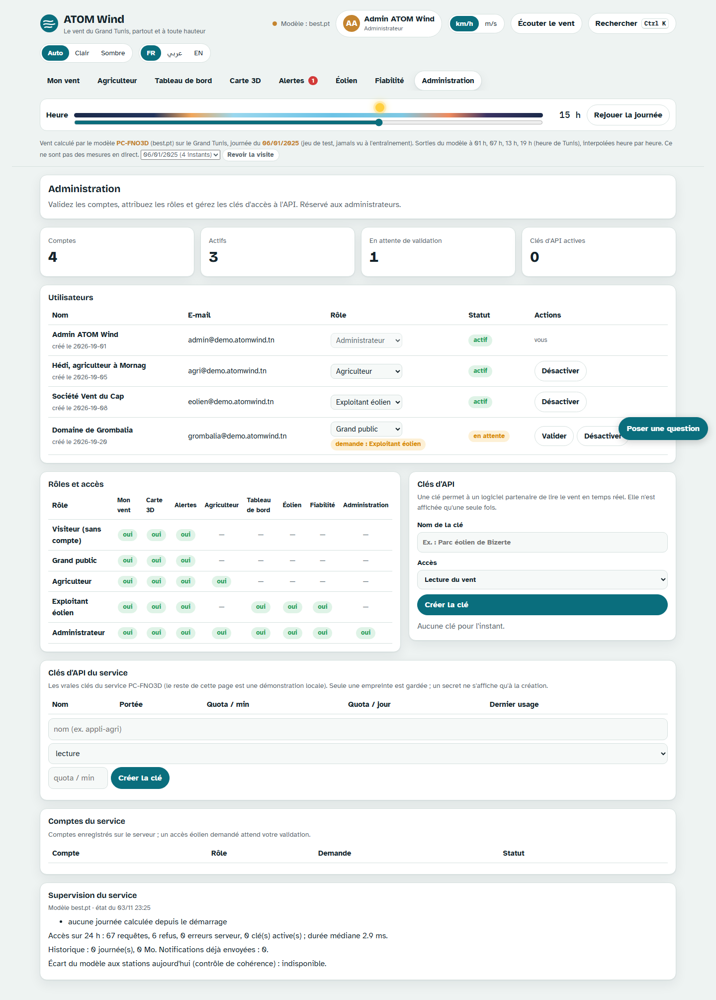
Capture intégrale · Page 25 du PDF
INTERFACE 16 · ATOM WindATOM Wind - Assistant
Proposer une entrée en langage naturel : panneau de conversation, exemples et saisie. Le backend prévoit Claude et les outils ATOM Wind.
Panneau capturé sans envoi de question. Le backend exige ANTHROPIC_API_KEY ; la réponse du fournisseur n’a pas été testée.
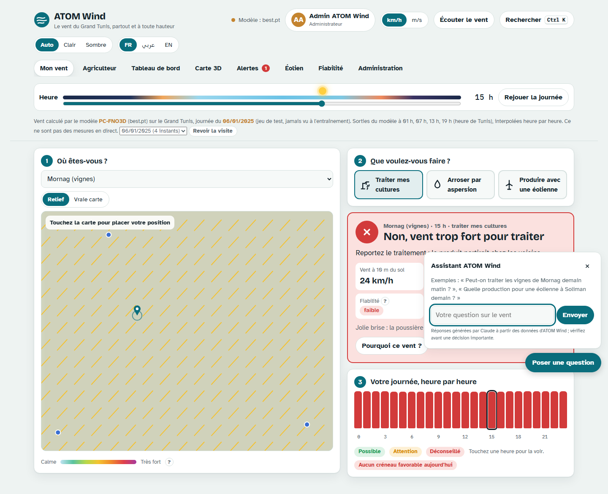
Capture intégrale · Page 27 du PDF
INTERFACE 17 · ATOM WindATOM Wind - Recherche
Accélérer l’accès aux lieux et fonctions : palette dans l’en-tête ou avec Ctrl K, raccourcis adaptés au rôle actif.
Ouverture vérifiée ; toutes les recherches possibles n’ont pas été testées.
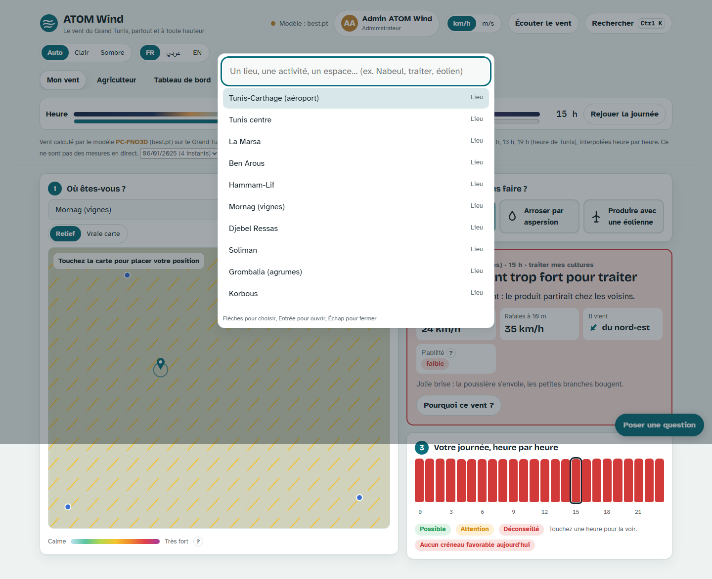
Capture intégrale · Page 28 du PDF
INTERFACE 18 · ATOM WindATOM Wind - Menu du compte
Afficher l’identité, le rôle, les espaces disponibles et l’action de déconnexion.
Profil appartenant au jeu de démonstration du navigateur de test, sans connexion à une identité réelle.
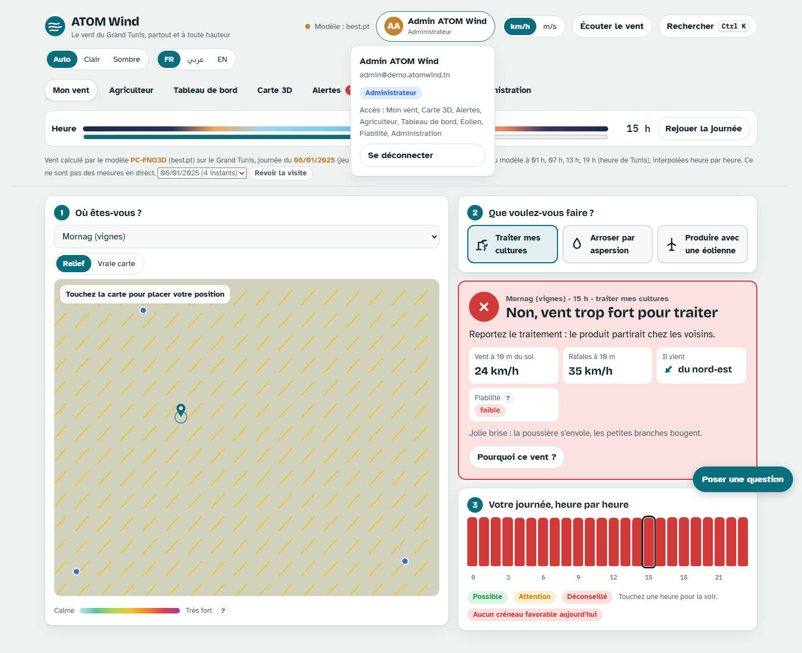
Capture intégrale · Page 29 du PDF
INTERFACE 19 · IntégrationDocumentation de l'API
Découvrir les routes du service : santé, métadonnées, instants, champs, points, profils, qualité et fonctions spécialisées, via OpenAPI.
Page accessible ; dix contrôles HTTP/MCP sélectionnés ont répondu 200. Toutes les routes documentées n’ont pas été testées.
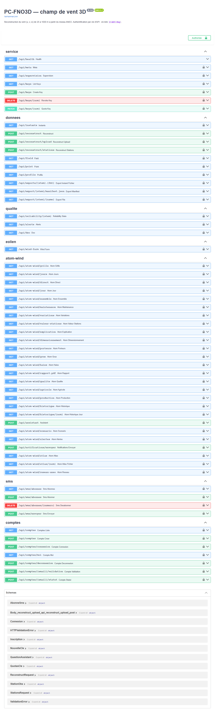
Capture intégrale · Page 30 du PDF
INTERFACE 20 · ExportsVisualiseur autonome des exports
Consulter un export sans recharger le modèle : carte par altitude et variable, coupe verticale et informations sur la grille et l’instant.
Lecture de recon_006_000000 vérifiée : manifeste JSON et tableaux Float32 servis sur le port 8081.
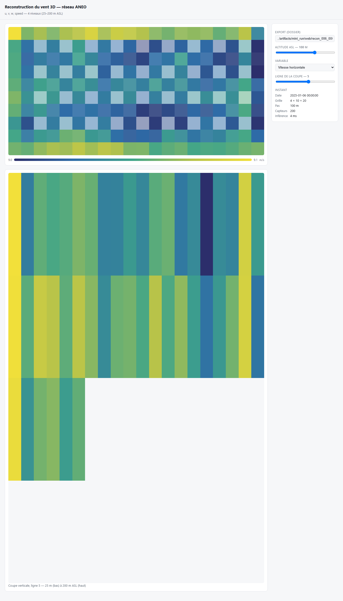
Capture intégrale · Page 31 du PDF